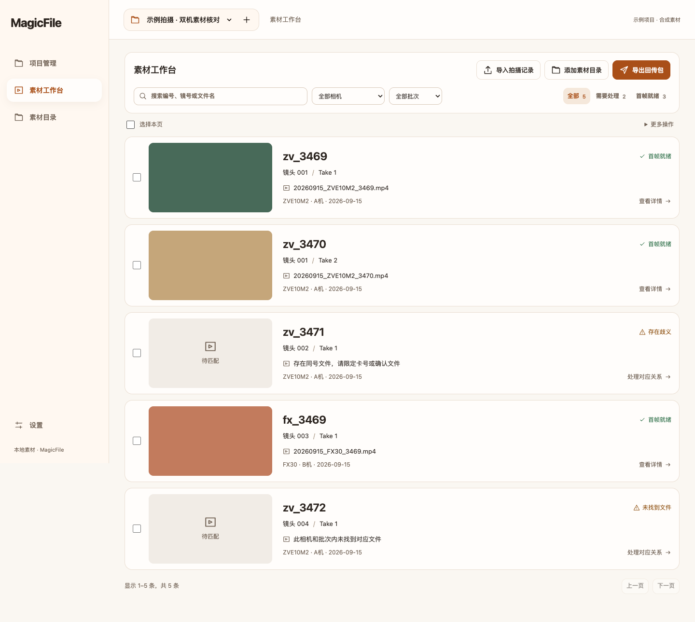

让现场编号，
找到对应画面。
将登记的 zv_3469 与视频 20260915_ZVE10M2_3469.MP4 对齐。自动提取第一帧，按项目管理，让每个编号都有画面可核对。
下载到自己的 Mac，使用自己的素材。
项目和首帧缓存都保存在本机。

从下载到本机使用
运行环境与媒体工具已包含在下载包中。
下载并解压
将 MagicFile.app 拖到 Mac 的「应用程序」文件夹。
双击打开
浏览器会打开本机工作台。首次打开如被 macOS 拦截，请按下方说明允许打开。
绑定素材目录
导入登记清单，设置相机简称与文件编号规则，选择本机文件夹，开始匹配和抽取首帧。
使用前，你可能想知道
这是网站在线使用，还是本地软件？
网站用于下载安装包。每台 Mac 各自运行 MagicFile，读取自己选择的素材目录，独立保存项目和首帧缓存。日常使用不需要联网或登录，也不依赖其他人的电脑开机。
首次打开被 macOS 拦截怎么办？
当前版本尚未进行 Apple 签名公证。将应用移到「应用程序」并尝试打开后，前往「系统设置 → 隐私与安全性」，找到 MagicFile 的提示并选择「仍要打开」。请仅使用此页面提供的下载包。
如何管理和删除项目？
打开应用左侧的「项目管理」，可以新建、切换、重命名或删除项目。确认删除后，只清理这个项目在 MagicFile 内的记录、回传历史和首帧缓存，保留原视频及已导出的文件。正在处理素材时，需要等待任务完成。
升级会影响项目和视频吗？
原视频不会被复制、改名或删除。项目和首帧缓存保存在 ~/Library/Application Support/MagicFile/data/。升级前运行下载包中的「停止 MagicFile.command」，再替换应用即可。备份时先停止服务，再复制整个 data 文件夹。
现在可以直接回传到 MagicBoard 和 MagicShot 吗？
当前可以导出包含首帧图片和编号对应关系的预览回传包。MagicBoard / MagicShot 接收端仍需接入新协议，暂未实现两端自动同步。请保留导出的文件，勿将其当作旧版完整项目包导入。
为什么关闭浏览器后仍然在运行？
浏览器只是本机软件的操作窗口。关闭窗口后，扫描和首帧任务仍可在后台继续。任务完成后，运行下载包附带的「停止 MagicFile.command」即可关闭本机服务。
如何检查下载包完整性？
可下载 SHA-256 校验文件，核对安装包。当前版本的校验值为：
c8ddd99a7cb512e6ea8374195838c2f4aaf2b5d3b1964f4bf7c22568d870c8f3